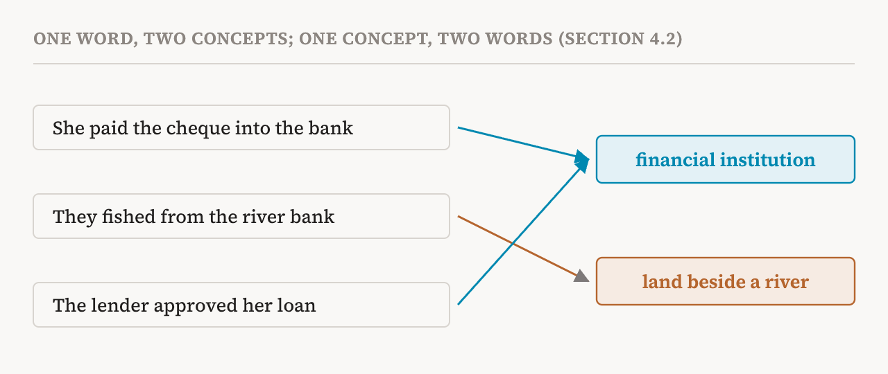
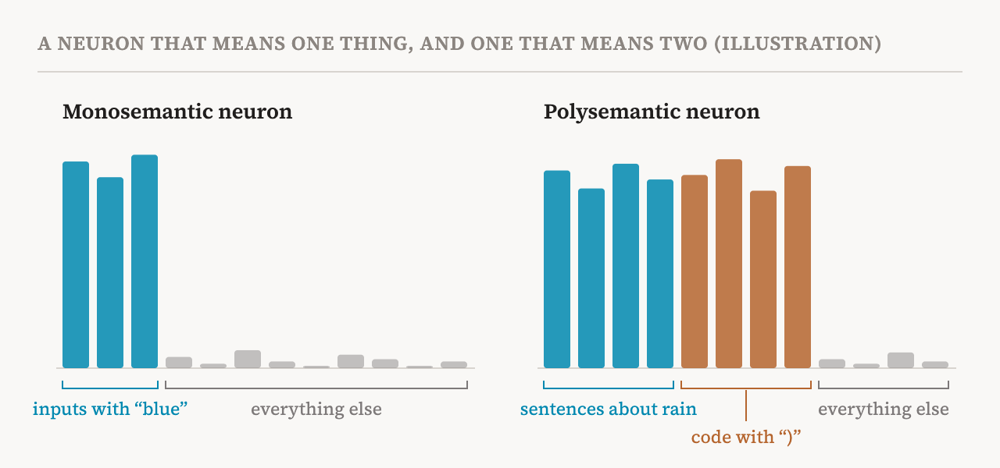

Part 4 showed where the numbers inside a transformer live: in the residual stream, and in the neurons of each MLP. This part asks what those numbers stand for. It covers sections 4.1 to 4.3 of the book (pages 21–23), where the authors set up the vocabulary the rest of the book uses. They are careful to define their terms without assuming, yet, that models store information in any particular way. The hypotheses about that come in parts 7 to 9.
Two kinds of understanding
The book starts by stating precisely the difference that parts 1 to 3 kept returning to. Think of a model as a function: it takes an input from some set of possible inputs and returns an output. Behavioural interpretability studies that function through pairs of inputs and outputs, collected on a finite set of test inputs. It treats the model as a black box.
Mechanistic interpretability studies the same function by examining what happens inside it: the activations, which are the numbers the model computes along the way, and the parameters, the learned weights that produce them. It does this at different levels of detail, always in relation to the model's behaviour. In short, behavioural work describes what a model does, and mechanistic work explains how the output is computed.
What is a concept?
Almost every method in the book talks about concepts, so the book pins the word down. A concept is a distinct, reusable unit of information or knowledge that can be identified across different instances or contexts. Many concepts are familiar human categories, such as a dog, the colour red, or words of praise. But they need not be.
The key word is reusable. Take the word "bank", which can mean a financial institution or the land beside a river. Working out which concept is present in a particular sentence may need the surrounding words. Once identified, though, the concept of a financial institution should stay recognisably the same across all the contexts it appears in, whether the word is "bank", "lender" or something else.

The definition deliberately leaves room for concepts that people have no word for. A network may form a coherent, reusable unit of information that matters to its computation and still lack any natural human description. The book treats being understandable to humans as a property some concepts happen to have, not as a condition for being a concept. It also notes that almost all interpretability research so far has studied concepts people can readily name. Finding and describing the concepts that matter to a model but do not fit human categories remains largely unexplored.
A neuron that means one thing
Part 4 introduced neurons: the units of an MLP's expanded hidden layer. Each neuron has an activation at each position in the text, a single number. The book writes it as the activation of neuron n in layer ℓ at position t for input x.
The easiest neuron to interpret would respond to one concept only. Imagine a neuron whose activation is large and positive whenever the current word is "blue", stays close to zero otherwise, and, when changed by hand, pushes the model's outputs towards or away from things related to blue. We could reasonably say that this neuron corresponds to the concept of blue. Note that the conclusion needs all three observations: the neuron fires for blue, it stays quiet for everything else, and changing it changes the model's behaviour in a blue-related way.
Assuming that some neurons behave like this, early work built methods to find neurons that detect particular concepts and to label what each one does. In image models, for example, one well-known method from 2017 matched individual units to concepts such as textures, objects and scene types.
Neurons that mean several things
Follow-up studies found a complication. Individual neurons often respond strongly to several concepts that look unrelated from a human point of view. This is called polysemanticity, from the Greek for "many meanings", and its opposite is monosemanticity.

The book's definition is careful. A neuron is polysemantic if there are two distinct concepts, with inputs and positions for each, such that the neuron's activation is large for both, and intervening on those activations causally influences the model's behaviour related to both concepts. The second half matters. A neuron that merely fires for two things might be detecting something they share that we have not noticed. Polysemanticity in the book's sense requires that the neuron actually does work for both.
Why would a network do this? The book points to representational constraints and to superposition, the idea that a model stores more concepts than it has neurons by letting them share. Part 8 is about that hypothesis. Whatever the cause, polysemanticity makes explanations neuron by neuron difficult. It suggests that the meaningful content of a model may not line up with its individual neurons, which is why researchers began looking for other units of analysis.
One note from outside the book. How widespread polysemanticity really is remains debated. A 2026 essay by Nick Cammarata, which this site read closely in "Already Clean", argues that some famous examples of polysemantic neurons were misread, and that many neurons are cleaner than the field assumed. The book's definition is useful for exactly this kind of argument: it says what evidence would settle the question for any given neuron.
Features
Because single neurons are often polysemantic, mechanistic interpretability has increasingly moved to other units. Researchers have found that models sometimes encode human-interpretable concepts as directions in activation space, or as low-dimensional manifolds: curves and surfaces inside the space rather than single axes. The book uses the word feature broadly, for any representation in the model that corresponds to a human-interpretable concept.
To make that concrete, recall from part 4 that the residual stream at a position is a list of d numbers. The set of all such lists is the activation space of the stream, a space with d dimensions. Each neuron is one axis of such a space. A feature, in the book's technical sense, is a geometric structure in the activation space of some component: the residual stream, the output of an attention head, or the output of an MLP. The simplest such structure is a direction, a particular way of combining many neurons at once.
The book's formal definition has two parts. A feature associated with a concept is a geometric structure in activation space whose activation is predictive of the concept, and causally relevant to its presence or expression. So, as with neurons, a feature claimed to stand for a concept should do two things. Its activation should go up when the concept is present. And increasing or suppressing it should change the model's behaviour in a way related to the concept. This mirrors the two conditions for mechanistic analysis from part 1: a correlation with the inside of the model, then an intervention to show it matters.
In this sense, features are a more expressive and more general unit than neurons. A neuron is one particular direction, the one that happens to line up with an axis. A feature can be any direction, or something curved.
Methods as approximations
The book does not commit, at this point, to what form features really take. It treats existing methods for finding and manipulating features as working approximations, each shaped by its own assumptions. Two families of methods find candidate features. Readout-based methods translate activations into something readable, often by asking a language model to describe them (part 22). Sparse decomposition methods break activations into many simpler parts, the best known being sparse autoencoders (parts 10 to 13). Researchers then manipulate the candidates to test whether they matter causally.
In practice, most of these methods treat features as approximately linear, meaning directions that can be added and measured, as linear probes and dictionary learning do. Whether that assumption is justified is the subject of part 7.
One found is not the only one
The section ends with a warning. For a given concept, a feature you manage to find may be only one of many internal representations connected with it. The book's example is refusal, a model's tendency to decline a request. A 2024 study found a single direction in the residual stream that steers a model towards or away from refusing. That is a striking result. But it does not show that this direction is the whole story of how refusal is represented. The model may encode refusal in a more complex way across several layers and components, and other causally relevant structures, such as low-dimensional manifolds, may exist that nobody has found yet.
The same caution applies throughout the series. Finding a handle on a concept shows that the handle works. It does not show that it is the only handle, or that we now understand how the model represents the concept.
| Term | Meaning |
|---|---|
| Activation | A number the model computes along the way, such as a neuron's output at one position |
| Parameters | The learned weights that produce the activations |
| Concept | A distinct, reusable unit of information that can be recognised across contexts |
| Machine-specific concept | A concept that matters to a model but has no natural human description |
| Monosemantic | Responding to, and acting on, one concept |
| Polysemantic | Responding strongly to several unrelated concepts and affecting behaviour for each of them |
| Activation space | The space of all possible activation vectors of a component, with one dimension per number |
| Feature | A geometric structure in activation space that predicts a concept and causally affects its expression |
| Direction | A fixed way of combining many dimensions at once; the simplest kind of feature |
| Manifold | A curved structure, such as a circle or surface, inside the activation space |
Next, part 6 shows how features and components connect into circuits, the book's way of describing a mechanism.